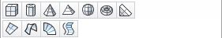
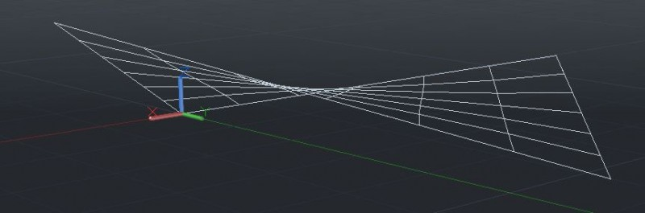
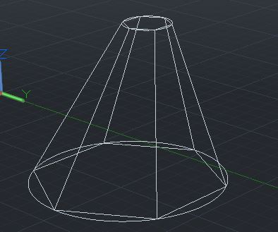
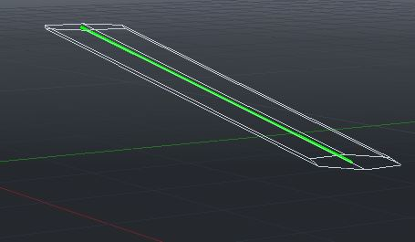
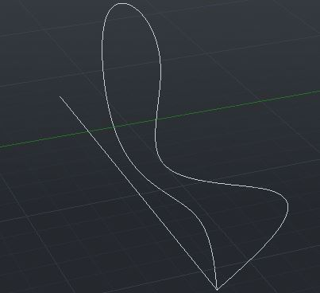
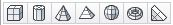

Лекция 11: 3D модели. Каркасы. Поверхности.
Трехмерные объекты, в AutoCad можно представить каркасами, поверхностями и твердотельными моделями. Каркасные модели представлены только ребрами граней и представляют собой прозрачные объекты. Поверхности имеют непрозрачные грани но при этом пустые внутри и представлены лишь оболочкой без наполнения. Твердотельный объект — сплошной, имеет объем и массу.
Каркасные модели
Создается каркасная модель командами построения двумерных графических примитивов, к которым относятся отрезки, точки, круги, дуги и т.д., но задавать нужно трехмерные координаты точек X, Y, Z. Трехмерные координаты вводятся с клавиатуры или указываются курсором мыши с обязательным использованием объектной привязки.
Поверхности
Поверхности представляются не только ребрами, они же в свою очередь представляются непрозрачными гранями. Поверхность может быть представлена ??сеткой, то есть рядом последовательно расположенных граней, имеющих общие ребра. Поверхностная модель характеризуется объемом. В отличие от каркасной модели поверхностные модели более наглядно характеризуют объект, позволяют скрывать невидимые части объекта. Средствами AutoCad можно создать поверхности таких типов:
1.Команда 3DFACE строит трехмерную грань, задается тремя или четырьмя ребрами.
2.Команда 3DMESH строит сетку из четырехугольников, вершины которых нужно задать.
3.Команда PFACE строит многогранную сетку, для которой задаются вершины и указываются грани к которым они относятся.
4.Команда PFACE строит многогранную сетку, для которой задаются вершины и указываются грани к которым они относятся.
5.Команда RULESURF образует сетку, соединяющий два криволинейные или прямые ребра.
6.Команда REVSURF образует поверхность вращения путем вращения двумерного объекта вокруг оси.
7.Команда TABSURF образует поверхность путем перемещения двумерного объекта в заданном направлении.
8.Команда 3D открывает диалоговое окно, в котором выбирается один из стандартных трехмерных примитивов (параллелепипед, сфера, призма и т. др.).
Команды создания поверхностей находятся в меню Draw >Modeling> Surfaces или вызываются нажатием соответствующих кнопок панели инструментов Surfaces. Другой способ создания поверхностей сложной формы заключается в применении теоретико-множественных операций в области, образованных командой Region.
Трехмерная грань (3DFACE)
Способы ввода команды:
Набрать с клавиатуры команду 3DFACE.
Вызов меню: Draw >Modeling> Meshes > 3DFace
Кнопка на панели инструментов. 3d face button
Командой строится треугольная или четырехугольная грань, вершины которой могут не принадлежать одной плоскости. После введения, команда последовательно выдает запросы относительно координат четырех вершин. Какие указываются одним из известных способов — с клавиатуры в командной строке или курсором мыши с обязательным использованием объектной привязки. Координаты, указываемые курсором мыши без использования объектной привязки воспринимаются системой как двумерные координаты на плоскости построений XY. Диалог с системой имеет вид: Command : _3dface Specify first point or [ Invisible ] 100,50,100 Specify second point or [ Invisible ] 40,80,10 Specify third point or [ Invisible ]
Кромка (EDGE)
Способы ввода команды:
Набрать с клавиатуры команду EDGE.
Вызов меню: Draw> Modeling> Meshes > EDGE.
Кнопка на панели инструментов. edge button
Команда управляет видимостью ребер граней. Запросы команды: Specify edge of 3dface to toggle visibility or [Display] позволяют выбрать ребра, которые должны быть невидимыми, скрытыми. Для изменения видимости ребер служит опция Display, которая позволяет выполнить противоположное действие и выбрать ребра, для отображения на экране.
Трехмерная грань (3DMESH)
Способы ввода команды:
Набрать с клавиатуры команду 3DMESH.
Вызов меню: Draw> Modeling> Meshes > edge mesh.
Кнопка на панели инструментов. 3d face button
Команда 3DMESH строит произвольную незамкнутую сетку с четырехугольников, вершины которых нужно задать. Использование команды позволяет построить сетку достаточно сложной конфигурации. Команда выдает запрос на размер сетки в направлениях М (Enter size of mesh in M ??direction), который ближе к горизонтальному направлении и N (Enter size of mesh in N direction), который ближе к вертикальному направлении. В ответ нужно ввести число в диапазоне от 2 до 256. Далее выдаются запросы относительно координат точек. Необходимо учитывать, что точки сетки имеют такую ??нумерацию и расположение:
Многогранная сетка (PMESH)
Способы ввода команды:
Набрать с клавиатуры команду PMESH
Команда строит многогранную сетку какого угодно вида с произвольным количеством вершин. Сначала вводятся координаты вершин: Command: PFACE Specify location for vertex 1: 40,50,0 Specify location for vertex 2 or
Набрать с клавиатуры команду EDGESURF.
Вызов меню: Draw> Surfaces> Edge Surface.
Кнопка на панели инструментов. edit mesh button
Поверхность образуется на четырехугольнике, стороны которого могут быть прямыми, дугами или полилиниями. Размер сетки определяется системными переменными SURFTAB1 и SURFTAB2, которые определяют количество прямолинейных сегментов, заменяющих криволинейные стороны. По умолчанию значение системных переменных равно 6.
Поверхность соединения (RULESURF)
Способы ввода команды:
Набрать с клавиатуры команду RULESURF.
Вызов меню: Draw> Surfaces> Ruled Surface.
Кнопка на панели инструментов. rulled button
Команда RULESURF образует сетку, соединяющий две кромки. Кромками могут выступать отрезки, дуги, полилинии. Они должны быть одновременно незапертой или одновременно замкнутыми. Число прямолинейных сегментов вдоль криволинейных кромок определяется системной переменной SURFTAB1. Вид поверхности зависит от выбора точек, указывающих кромки. Выбор соответствующих точек на кромках приводит к созданию не само перекрывающей поверхности, а показав точки на противоположных концах, построим само перекрывающую поверхность.
Поверхность перемещения (TABSURF)
Способы ввода команды:
Набрать с клавиатуры команду TABSURF
Вызов меню: Draw> Surfaces> Tabulated Surface
Кнопка на панели инструментов. tubsurf button
Команда TABSURF образует поверхность путем перемещения двумерного объекта в заданном направлении. Объект перемещения задается отрезком, дугой, полиллинией. Направление перемещения задается отрезком или незамкнутой полилинией. Создание поверхности сопровождается диалогом:
Поверхность вращения (REVSURF)
Способы ввода команды:
Набрать с клавиатуры команду REVSURF.
Вызов меню: Draw> Surfaces> Revolved Surface.
Кнопка на панели инструментов. revol button
Поверхность образуется вращением выбранного объекта вокруг заданной оси. Объект вращения — отрезок, дуга, полилиния. Ось задается отрезком или конечными точками незапертой полилинии. Объект можно повернуть на полный угол – 360о или на заданный угол. Команда позволяет выбрать начальное значение угла и задать значение угла поворота. Положительное значение угла задается против часовой стрелки. Размер сетки поверхностей вращения определяется значением системных переменных SURFTAB1 и SURFTAB2. Диалог с системой имеет вид:
3D
Способы ввода команды:
Набрать с клавиатуры команду 3D
Вызов меню: Draw> Surfaces> 3D Surfaces
Команда 3D открывает диалоговое окно, в котором выбирается один из стандартных трехмерных примитивов (Параллелепипед, сфера, призма и т.д.). В зависимости от типа выбранного примитива система выдает запросы для уточнения исходных данных, необходимых для определения положения и размера примитива.
В следующем уроке мы продолжим рассказывать о методах построения 3D примитивов, а конкретно о построении твердых тел.